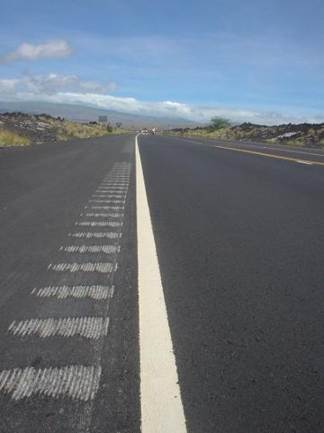

見えるもの
澄み通った空
強烈な太陽によってできる自分の影
とろけるようなアスファルト
進んでも進んでも同じような風景
たまに青い海
前を行く競技者の影
聞こえるもの
風がうなる音
自転車がきしむ音
ホイールが風を切る音
たまにギア・チェンジ
意識するもの
目標とするタイム
フォームや力の伝え方
ライバルとの位置
体力の消耗具合とペース
まだまだ追い込むことができる余地はないか
救われるもの
たまにエイドステーション
オアシスに感じる
孤独と静寂
無限とも思える距離
一歩一歩進んでいく
あきらめなければフィニッシュは必ず訪れるのだから
What I can see
The clear blue sky
My own shadow made by the strong sunlight
The asphalt road makes me feel as if it's going to melt
Similar scenery continues, no matter how far I move forward
The blue sea sometimes
Shadows of other athletes
What I can hear
The wind groans,
my bike creaks,
the wheels cut through the air
and the gears change
What's in my mind
The target time,
My cycling form,
Conscious of my muscles
What is the best position against my rivals?
The level of the consumption of physical strength and my pace:
Do I have enough stamina left to speed up now?
What I feel comfortable with
Aid stations located every few miles:
They are like an oasis in the desert.
Solitude and silence
The distance to the goal seems never ending,
but I just keep going.
As long as I don't give up, I'm sure I can reach my goal.